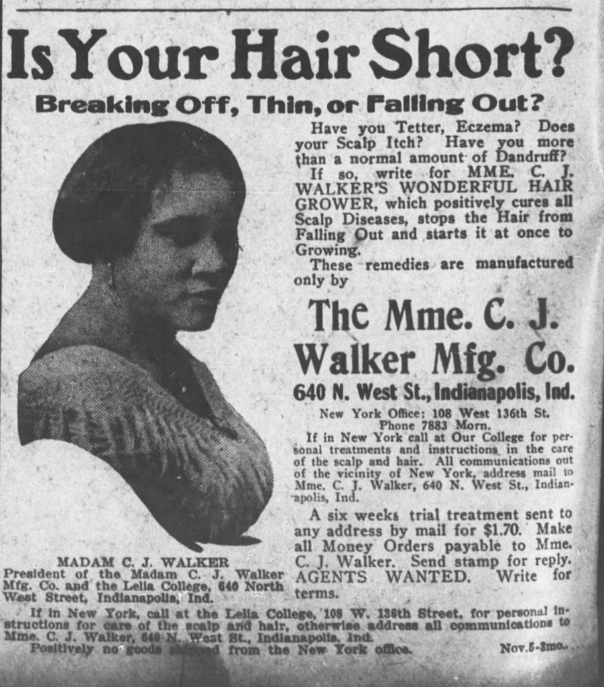
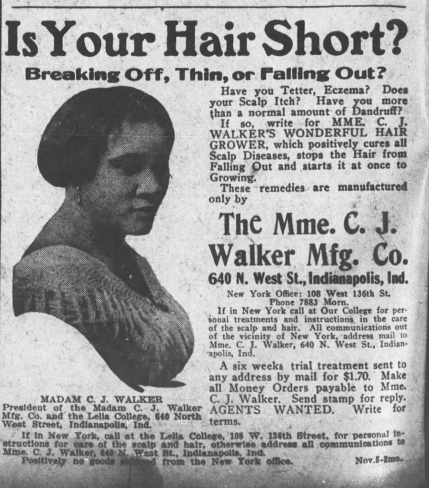

Biography
Madam C.J. Walker was born Sarah Breedlove, near the village Delta in Louisiana on December 23rd, 1867. She was born on a cotton plantation, with 4 other siblings.
At age 20 after giving birth to her daughter, Sarah worked as a hairdresser. In the 1890s, she started losing her hair due to a scalp disorder. This is what inspired her to pursue creating a
hair product to cure baldness and give African-Americans better hair care. With the help of her third husband, Charles Joseph Walker, a news paper salesman, Sarah, now called Madam C.J. Walker, used her clever advertising
tactics and sales strategy to make her products a success. Most white workers around the time were making $11 a week, while she was making double that amount.

Her talented entrepreneurship earned her the title of "the first black woman millionaire in America." Madam used her earnings in generous ways to
fight racism and sexism. She contributed amounts from $1,000-$5,000 to associations such as the NAACP and African-American YMCA.
Madam C.J. Walker died on May 25th, 1919, but still today, she stands as a brilliant entrepreneur and a model to women.
In the 1890s, she started losing her hair due to a scalp disorder. This is what inspired her to pursue creating a
hair product to cure baldness and give African-Americans better hair care. With the help of her third husband, Charles Joseph Walker, a news paper salesman, Sarah, now called Madam C.J. Walker, used her clever advertising
tactics and sales strategy to make her products a success. Most white workers around the time were making $11 a week, while she was making double that amount.

Her talented entrepreneurship earned her the title of "the first black woman millionaire in America." Madam used her earnings in generous ways to
fight racism and sexism. She contributed amounts from $1,000-$5,000 to associations such as the NAACP and African-American YMCA.
Madam C.J. Walker died on May 25th, 1919, but still today, she stands as a brilliant entrepreneur and a model to women.